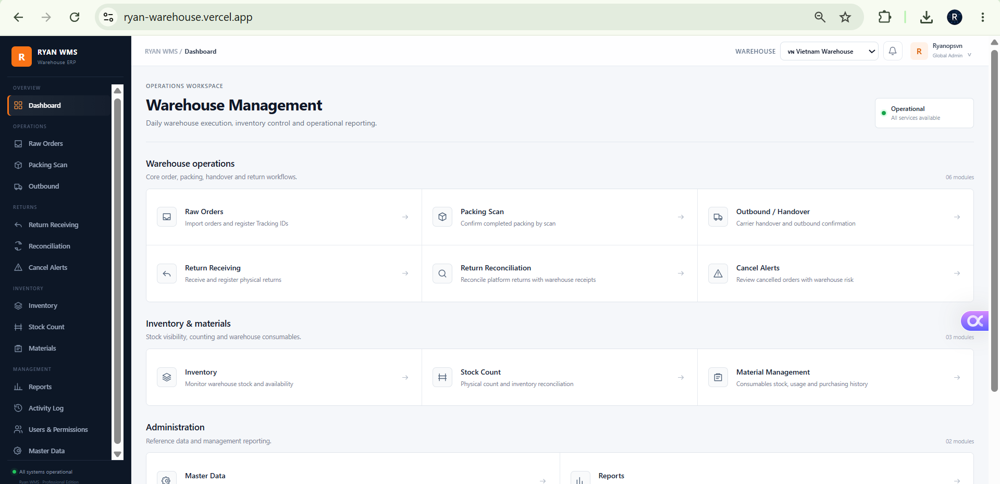

~80% faster handling
WAREHOUSE LEADERSHIP · FULFILLMENT · INVENTORY · PROCESS EXCELLENCE
Operate today.
Build for tomorrow.
I lead warehouse operations by connecting people, process, inventory and data — improving fulfillment reliability, operating discipline, loss control and management visibility.
1,100 m²
Warehouse scope
8K–12K
Orders / month
99%+
Fulfillment health

TRƯƠNG MINH CHÍ (RYAN)
Warehouse Operations Leader
Fulfillment · Inventory · Process Excellence
EXECUTIVE PROFILE
Warehouse leader building manager-level operating systems.
Warehouse operations leader with hands-on ownership across fulfillment, inbound and outbound execution, inventory governance, reverse logistics, manpower planning, KPI management, cost and loss control, and warehouse digitalization.
I translate operational problems into management controls: clear ownership, SOPs, KPIs, capacity plans, exception governance and decision-ready reporting. My focus is scalable execution rather than day-to-day firefighting.
People Leadership
Inventory Control
Fulfillment
Reverse Logistics
SOP & KPI
Capacity & Manpower Planning
TRANSFORMATION SCORECARD
Measurable management impact.
~94–100% reduction
Carrier-return leakage eliminated
Recovered value / revenue
Previously overlooked claim value
Built standards from scratch
Lower labor dependence. Lower loss. Faster flow. Recovered value. Stronger operating discipline.
OPERATING SYSTEM
End-to-end warehouse control architecture.
Physical execution supported by scripts, SOP, KPI, audit trails and management dashboards.
OP RELEASE
→
PACKING
→
OUTBOUND
→
HANDOVER
→
RETURN / RTO
→
TECH
→
RECOVERY
Order processing / packing
Carrier handover / return receipt
Inspection / recovery
Tracking validation / duplicate control
Timestamps / locks / reconciliation
Exception handling / KPI
Campaign / manpower / PO
Materials / cost / claims
Return / warranty / compliance
FLAGSHIP DIGITALIZATION PROJECT
Ryan WMS — Warehouse Operations Control System.
A self-designed warehouse operations system created from real e-commerce operating requirements. This public portfolio intentionally presents only selected capabilities and interface views; detailed workflow logic, validation rules and internal process design remain private.
PROJECT ROLE
Process Owner · System Designer · Builder
Operations-first digitalization project
Digital execution support, status visibility and operational traceability.
Preventive controls and exception visibility designed to reduce execution risk.
Inventory monitoring, physical verification and stock-risk visibility.
Operational reporting for performance review and continuous improvement.

SELECTED PUBLIC VIEW
Operations digitalization designed from warehouse reality
One selected interface is shown to demonstrate product ownership, process design and management visibility. Detailed workflows, business rules and live-system access remain private.
PROJECT CAPABILITY
Process Design · Warehouse Digitalization · Data Control · Operational Reporting
Public showcase: selected views demonstrate product ownership and system-building capability. Detailed workflow architecture, business rules, database design and source code are intentionally not disclosed.
SELECTED CASE STUDIES
From operational problem to business result.

01
Protecting FHR during peak sales
Forecast workload, prepack volume, manpower allocation and carrier handover requirements. When packing was behind plan, coordinated carrier pre-scanning and handover preparation while packing continued in parallel.
2,215 / 2,215 prepack · 0 pending

02
Return reconciliation & carrier accountability
Built tracking-level reconciliation between platform return records and physical warehouse receipts, with carrier follow-up and aging exceptions.
Return leakage: ~50% → 0%

03
Materials, supplier & finance control
Forecast packing-material needs, monitor minimum stock, coordinate supplier pricing and availability, and maintain cost visibility with local and China Finance.
Supply continuity + cost visibility
CROSS-FUNCTIONAL LEADERSHIP
Warehouse leadership beyond the warehouse floor.
OP + CS
Return, warranty, order issues,
customer experience
China Team
Inbound shipments, supply and product issues
Technical + Partners
Technical issues and urgent sale-day recovery
Finance / Accounting
Inventory, cost, claims and expenses
Carriers
Pickup, handover, returns and contingency
Suppliers
Material price, availability and continuity
PROFESSIONAL RESUME
Experience, capability and credentials at a glance.
A concise recruiter-facing resume integrated with selected case studies and project evidence.
TRƯƠNG MINH CHÍ (RYAN)
Warehouse Operations Leadership · Fulfillment · Inventory Governance
ryanopsvn@gmail.com
Ho Chi Minh City, Vietnam
Warehouse and logistics operations professional with 4+ years of experience across logistics, e-commerce fulfillment, inventory control and team leadership. Currently leading end-to-end warehouse execution with responsibility for manpower, KPI, process governance, inventory accuracy, reverse logistics, cost/loss control and operational digitalization.
Warehouse Leader · promoted Jul 2026
Kingden Trading Co., Ltd.Lead end-to-end warehouse operations covering fulfillment, inbound, outbound, inventory control, returns, technical/warranty coordination and operational reporting.
- Lead manpower planning, KPI governance, workload allocation and daily warehouse execution.
- Own inventory accuracy, reconciliation, exception control and process standardization.
- Coordinate cross-functionally with Operations, CS, Finance, Purchasing, technical teams and logistics partners.
- Design warehouse controls and digital tools that improve traceability, management visibility and scalability.
Regional Operations Supervisor
Giao Hang Tiet Kiem (GHTK)Managed daily operations across multiple delivery stations, focusing on KPI performance, resource coordination, service quality and continuous improvement.
~50% → near 0%Return-related loss reduction
~5 min → ~1 minManual processing time
~350 h → 0–20 hPeak-sale OT requirement
>99%Stable-period fulfillment health rate
Ryan WMS — Warehouse Operations Control System
Self-initiated warehouse digitalization project designed to strengthen execution control, inventory visibility, exception management and management reporting. Public views are intentionally limited; detailed workflow logic and implementation remain private.
View selected project evidence →CAREER JOURNEY
Operations experience built step by step.
B.B.A. — International Business
University of Finance and Business Administration (UFBA)
Regional Operations Supervisor — GHTK
Multi-site KPI, resource coordination, incident handling and branch management support.
Warehouse Leader — Kingden
Joined warehouse operations in May 2026 and promoted to Warehouse Leader in July 2026. End-to-end execution, manpower, SOP/KPI, inventory, returns, cost/loss control and digitalization.
MANAGEMENT VALUE PROPOSITION
Lead the operation.
Build the system behind it.
Open to Warehouse Manager, Operations Manager and Fulfillment leadership opportunities. Selected sanitized systems and management cases are available for interview discussion.